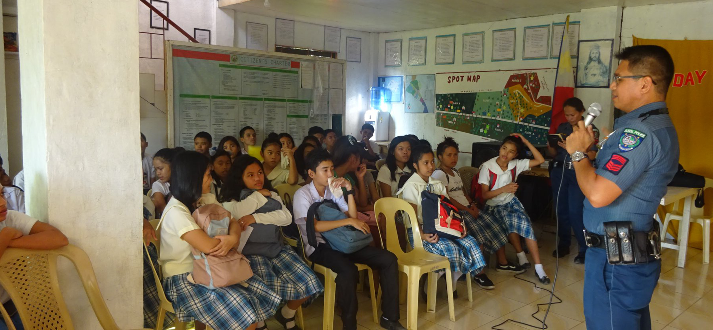

Aloja
Behind the Clouds
Cabacnitan
Cambacay
Cantigdas
Garcia
Janlud

Poblacion Norte
Poblacion Sur
Poblacion Vieja
Quezon
Quirino
Rizal


This interior town used to be a barrio of Bilar during the Spanish regime and was called Lindugon. During the early years of the American regime, this barrio was made into a municipality by Act No. 968 dated Oct 31, 1903 that provided the following: “The Municipality of Batuan shall consist of the territory of the barrio of Batuan in the present Municipality of Bilar, with the seat of the municipal government at the present barrio of Batuan.” (Acts of the Philippine Commission, Vol. XIV. Washington: Government Printing Office, 1904).
Batuan became a separate municipality through the efforts of some local leaders, such as Manuel Decasa, Alejandro Barril, Victor Tiongson, among others, who were put behind bars for strongly advocating the movement to cede Batuan from its mother town Bilar, and its subsequent creation as a distinct and separate town. Notwithstanding, those leaders pursued their aspirations after release from prison. Municipality of Batuan was created, originally comprising only five barangays namely: Lindugon, Cambacay, Rosariohan, Janlud and Cantigdas; but today comprising fifteen.
The early years of local administration saw its seat at Lindugon, now Poblacion Vieja. In 1911 however, the Municipal Hall, the seat of local government, was transferred to sitio Tinagacan for reasons of accessibility. Eventually, the parish church was also relocated to its present site at the Poblacion.
Batuan got its name from edible fruit with the same name, which grew galore in the locality. Today though these trees can hardly be found in the area.
During the Japanese occupation, Batuan was a haven of evacuees from the provinces of Cebu, Leyte and from other parts of the island/province. It was at the Batuan Central School site where the unification of the guerilla forces of Bohol was forged on 29 June 1942, paving the way for the creation of the Bohol Area Command (BAC) under the command of Major Ismael Ingeniero, whose election was hotly contested by rival factions. The command had its headquarters in brgy Behind the Clouds. Major Ingeniero and his force played a pivotal role in the Battle of the Visayas and capture of Bohol.
The climate in Batuan falls within Coronas climate type IV, characterized by not very pronounced maximum rainfall with a short dry season from one to three months and a wet season of nine to ten months. The dry season starts in February and lasts up to April sometimes extending to the middle of May. The heaviest rainfalls are from June to August. It is usually cold during the night in the area.
The entire area of Batuan is covered by two sedimentary rock formations: Maribojoc Limestone, occupying 78.74 km2 (30.40 sq mi), 99.6% of its total land area, and Carmen formation, occupying 0.34 km2 (0.13 sq mi), 0.4%. Dominant slope of the area is 30 – 50% covering an estimated area of 29 km2 (11.2 sq mi), 37.1% of its total land area, with 21 km2 (8.1 sq mi), 26.9% in the 0 - 3% category (more or less level). Batuan is entirely within the Loboc River Basin. Two tributaries of Loboc river – the Pagbathan and the Bayog – flow east–west into the main river course.
Basically, Batuan is an agricultural town as more than half of its total land area is devoted to agriculture, about 4,952 ha (12,240 acres) or 63%. This is the main source of livelihood in the locality where a great portion of its income is derived from crop production, livestock and poultry raising. Rice and corn are the principal crops grown in the area.
Batuan's working age or economically active population age 15-64, comprises 58% of its total population, while its dependent population, aged 0–14 and 65 years and above, comprises 42%.
There are eighteen learning institutions in Batuan of which nine are primary schools, six elementary schools, one public school and one private high school, providing secondary education. Batuan Colleges, a privately owned college school offering technical and short courses in a close tie-up with TESDA, has been in operation since mid 2000s.
All barangays have their day care centers where services are provided by daycare workers on a regular basis, a program financially supported by the LGU aside from other programs like supplemental feeding, emergency assistance, and burial assistance. The Municipal Health Office (MHO) is staffed by one doctor, five midwives, a nurse, a medical (laboratory) technologist, a sanitary inspector, and a dentist who reports only twice a week due to budget constraints. A team of Barangay Health Workers has been organized in all barangays to help facilitate and speed up the delivery of basic health services even in the remote areas.
For the maintenance of peace and order in the area, the LGU has a local PNP station headed by a police chief with ten (10) junior PNP personnel, equipped with some high-powered firearms and two patrol cars. The local PNP force is assisted in this regard by tanod members of each composite barangay as far as law and order are concerned at barangay level.
Batuan has a total road network of about 92.1 kilometres (57.2 mi) of which 65.5 kilometres (40.7 mi) are barangay roads, 15.8 kilometres (9.8 mi) are provincial roads, 3.2 kilometres (2.0 mi) national and 10.8 kilometres (6.7 mi) municipal roads. While the entire national road network is of either concrete or asphalt surface, only about 2.3 kilometres (1.4 mi) (21%) of its municipal roads, and about 2.5 kilometres (1.6 mi) (4%) of its barangay roads are concrete with the larger portion still earth and / or gravel. 98% of its provincial roads are gravel. The bus travelling there is Southern Star Bus bus.
Commercial and trading transactions in Batuan gravitate to the urban area, considered the town's Central Business District. However, commercial and trading activities in the area are brisk. Commercial activities in Batuan pass through a network of various commercial establishments. Sari-sari stores are the most common. Other are bakeries, eateries, drugstores, farm and poultry stores, and hardware stores. Service provider in the area include iron works, welding shops, repair shops, furniture factories & communication facilities. Among the ubiquitous industries of Batuan are the rice and corn mills located mainly in the Poblacion areas. Other than those, industrial activities are minimal.
Although Batuan is only about 3 km (1.9 mi) from the Chocolate Hills complex, tourism activities in the municipality are very few. There are no facilities and establishments that cater to the needs and wants of the industry. Batuan also has the Camanayon Mountain.

Named after the Visayan indigenous drum called ‘guimbao’ in Bohol (‘guimbal’ in Panay, ‘gimba’ to others), made from hollowed trunk and animal skin and which was a staple musical instrument in traditional ceremonies, the Guimbawan Festival is Batuan’s Holy Child Jesus of Prague (Señor Sto. Niño) Feast Day celebration formally established in 1986 by local devotees headed by Rev. Fr. Danilo Maniwan and the Sto. Niño Rosarians led by Mrs. Estrella Payag-Mateo and Mrs. Rose Payag-Perfecto.
While Guimbawan is influenced by the Philippine’s biggest Sto. Niño religious and cultural festival, Cebu’s Sinulog (as do most of the cultural festivals this part of the Visayas) – borrowing musically from the familiar ‘Sinulog, Isyagit og Kusog!’, the ‘prititit!’ beat and their latest remixes – this year, the Guimbawan organizers endeavored to create a unique group of standardized dance movements, a Guimbawan signature.
Though still dancing to the ‘Sinulog’ beat, Guimbawan performances now follow these homegrown basic steps: ‘dupa’, ‘binata’, ‘pagsadya ug pagdayeg’, ‘inamakan’, ‘guinimbawan’; and ‘karambola’ (freestyle steps which incorporate the Batuan ‘kuradang’) – giant steps into making the Guimbawan brand of honoring the Sto. Niño uniquely Batuanon.
With the familiar ‘prititit’ beat blasting off from the speakers set up at the market square (for the streetdancing showdown) and later on, at the municipal plaza (for the ritual showdown), the balikbayans, devotees and guests were treated with a near nonstop showcase of pagsadya-guinimbawan-karambola garbed in a spectrum of makeup and costume interpretations of the ecological and indigenous that ranged from modestly minimal to wildly theatrical.
The town has its own hymn which is called “Batuan Hymn” or in the Visayan dialect “Awit sa Batuan”. This was composed by Arnell Baguio. Below is the Batuan Hymn.
| Mayor | : | Jumawid, Antonio |
| Vice Mayor | : | Dumagan-Baguio, Yes |
| SB Members | : | Daquis, Joel |
| : | Pancho, Julito | |
| : | Bulalaque, Zeniza | |
| : | Dampog, Ronnie | |
| : | Alinab, Marcelo | |
| : | Bautista, Segundo | |
| : | Day, Marlon | |
| : | Merlas, Gamaliel | |
| ABC President | : | Bernadez, Ian |
| SK President | : | Barril, Sam Joseph |
| Location | : | Central Part of Bohol |
| Zip Code | : | 6318 |
| Congressional District | : | 3rd District |
| Number of Barangays | : | 15 Barangays |
| Income Classification | : | 5th Class |
| Ave. LGU Annual Income | : | P31,407,912.00 |
| Total Municipal Land Area | : | 7,815 Hectares |
| Timberland Area | : | 2,715 Hectares |
| Alienable & Disposable (A&D) | : | 5,100 Hectares |
| Soil Cover | : | Bantug Clay, Ubay Clay, Batuan Clay, Sevilla Clay |
| River Basins | : | Loboc RB |
| Population | : | 11,835 (2000 NSO Census) |
| : | 12,137 (2007 NSO Census) | |
| : | 12,481 (2012 projected) | |
| Average Population Growth Rate | : | 35% (2000-2007 NSO) |
| Total Number of Households | : | 2,494 (2007 Census) |
| Major Industries | : | Farming, Livestock Production |
| Literacy Rate | : | 92% |
| Higher Education Institutions | : | 1 |
| Number of Secondary Schools | : | 4 |
| Number of Primary/Elementary Schools | : | 6 Primary/11 Elementay |
| Language/Dialect | : | Boholano (Binisaya) |
| Religion/Religious Affiliation | : | Roman Catholic |
| Main Source of Potable Water | : | Groundwater |
| Water Supply | : | L1 Facilities - 143 SW; 27 DW; 74 Spring |
| : | L2 Systems - 17 | |
| Average Day Demand | : | 818 cu. m./day (2010); 2,400 cu. m./day (2030) |
| Estimated Groundwater Recharge | : | 69, 624 cu. m./day |
| Water Demand for Irrigation | : | 3,002 cu. m./day (SWECO), (2 existing CIS) |
| Energization Status (as of CY 1999) | : | 15 (100%) Barangays Energized; 2,540 (102%) HH Connections |
| No. of HH w/ Accessed to Sanitary Toilets | : | 1,790 HH |
| Drainage and Sewerage System | : | None |
| Number of Barangay Health Stations | : | 5 |
| Number of Hospitals | : | None |
| Number of Municipal Health Center | : | 1 |
| Number of Day Care Centers | : | 17 |
| Carpable Areas | : | 231 Hectares |
| Total Road Length | : | 76,400 kms. |
| Total Number of Bridges | : | None |
| Communication System | : | Cellsites: 3 - Globe/1 - Smart/1 - DITO |
| Official Website | : | None |